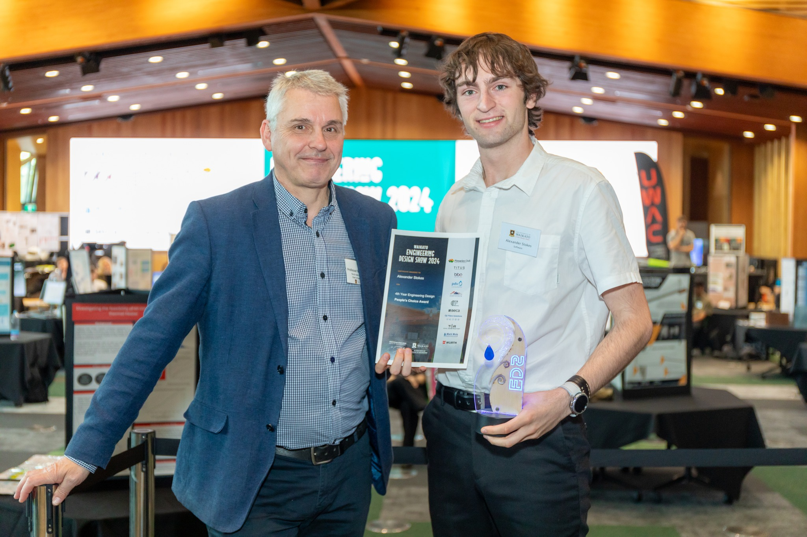

Our Story
Starting as a frustrated university student struggling to find his class room, CampusVirtual was born. Over the course of his last year at university, Alexander created this software to map out the University of Waikato, and soon saw a need for this software in places like confusing hospitals, airports, and other places where you can easily lose your way. Using state-of-the-art Computer Vision technology, CampusVirtual was able to create a virtual tour that was not only accurate but also easy to navigate.
Presenting his prototype at the University of Waikato's Engineering Design Show, Alexander was awarded the People's Choice Award for his project -- and even gained interest from the local news paper.
Our Product
Narrated DemoSoundless Demo
Compared to existing virtual tour technology, CampusVirtual provides a large scale and easier creation method. Simply put, CampusVirtual allows users to create virtual tours of any size and complexity with ease.
- 360 Video Mapping - Data collection takes as long as it takes to walk through your building/campus.
- Pathfinding - Students, teachers, patients, and employees can find how to get to any location within your campus.
- Large-scale - Capable of serving over 64 hectares of campus.
- Customisable - Users can customize the tour to their liking, including noting room names, see where you are in a floor, and search across multiple buildings
- Mobile-friendly - CampusVirtual is usable even on mobile devices, making it easy to use on-the-go.
- Accessibility - CampusVirtual is accessible to people with disabilities, providing a seamless experience for everyone, even allowing searching for stair-less paths.
- Upgradeability - Over time we can update the tour to reflect changes in your campus, including adding on new rooms, or blocking off restricted areas.
Contact Us
Get in touch with us. We'd love to hear from you!
hi@campusvirtual.io